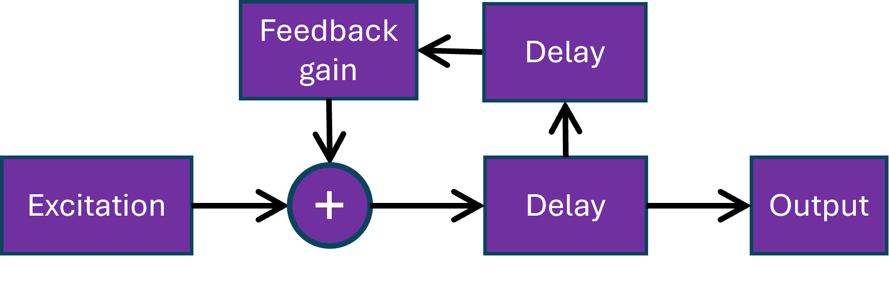
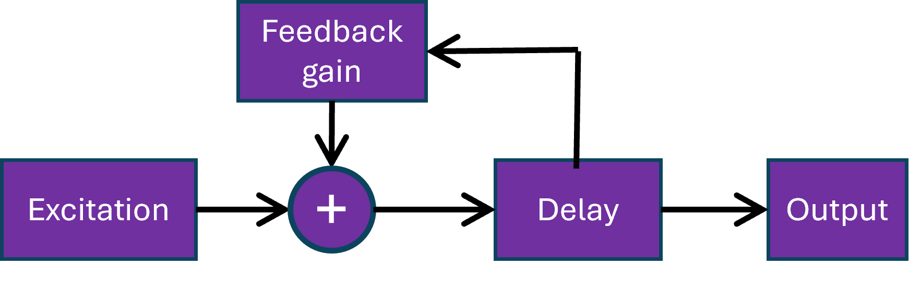
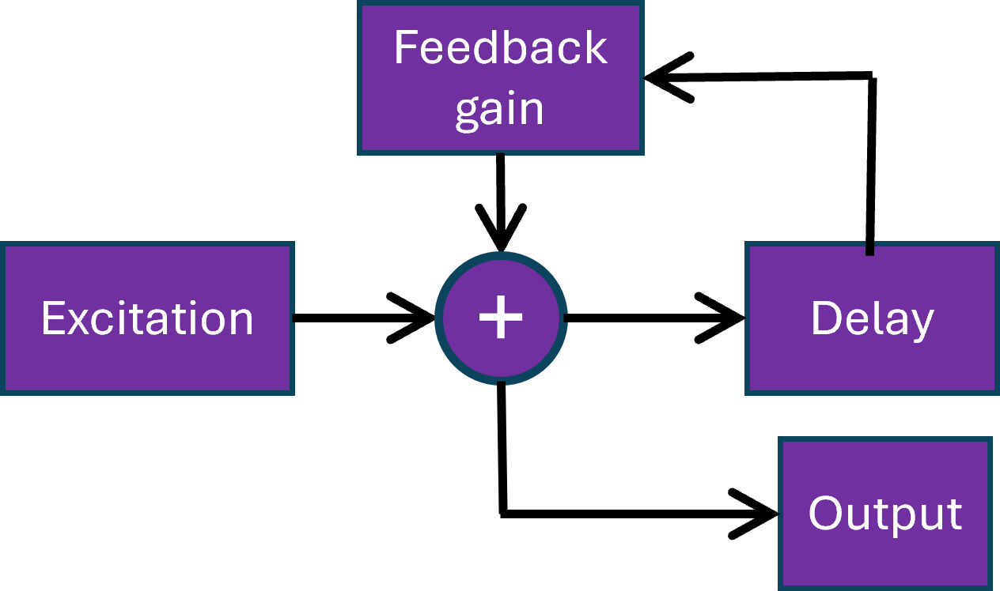

Basic waveguide implementations
The following block diagram directly matches the physical model.

However, we often use the simplified form shown below,

which is obtained by changing the point at which the delay loop is sampled, then combining delays inside the loop.
More generally, the input and output points as well as the order of elements inside the delay loop can often be modified with no audible difference,
even if the model is not exactly equivalent. This third diagram is intended for low latency implementation.
